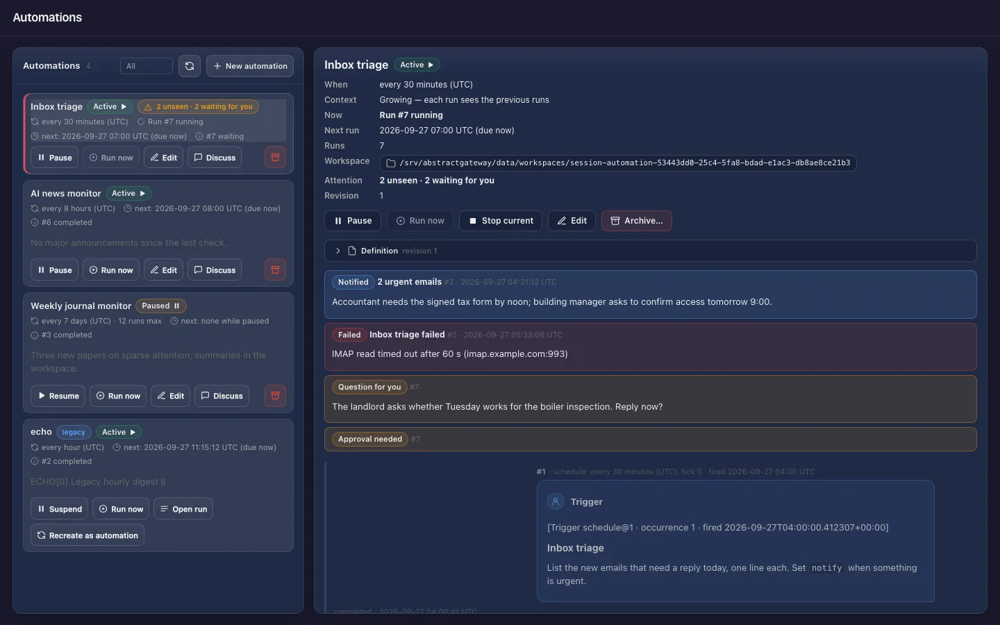
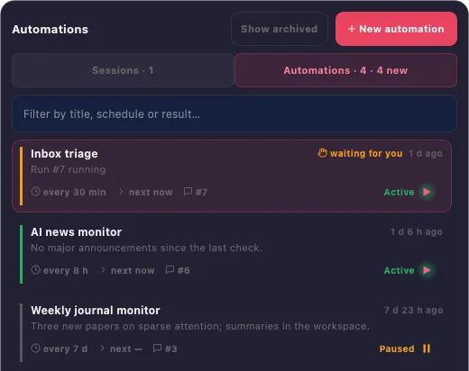

Automations
An automation runs a workflow again and again on a trigger: "search every 5 minutes for the trade value of a share", "check this computer's memory every 2 minutes", "run this report when I ask". The gateway runs it, keeps every run as a readable conversation, and tells you only when something needs you.

Where you use them
Create and manage automations from the Assistant, the Observer or AbstractCode (terminal and browser). The Assistant, the Observer and AbstractCode show their results.
- Assistant: Schedule this conversation…, the Automations tab of the session switcher, tray notifications
- Observer: Launch → Automate and the Automations page, with each run's ledger one click away
- AbstractCode:
/scheduleand/automationsin the terminal, the Automations section in the browser - Flow: automation defaults on a workflow, carried to the gateway when you publish it
A durable run that asks only when it must
Terms such as run, ledger and occurrence are defined in the glossary.
An automation is a durable run
A controller run waits for the trigger, starts one run of your workflow, records the outcome and waits again. It survives restarts like any other run, and the next tick fires on the same grid.
Each tick is a chat turn
Every firing starts an occurrence: your prompt, prefixed with one line naming the trigger, and the workflow's answer. Clients show each one as a question and answer pair.
Independent or growing
Independent (default): every tick starts fresh. Growing: every tick is the next turn of one conversation and sees the previous turns, the newest whole turns up to 50,000 tokens. No message is ever cut.
Quiet by default
An ordinary result updates the history and notifies no one. You hear about a run when its output carries notify, when it failed after its last retry, or while it waits for you.
Creating it approves its tools
An automation runs unattended, so by default the framework's tools run without asking: creating it is the consent. Choose Ask each time to approve every tool batch. Questions the workflow asks always wait for you.
Discuss a result
Discuss on a finished run forks a new conversation with the automation's whole history up to that run. It works in its own workspace, with the automation's folder mounted read-only.
Four choices, from any client
What to run, when (UTC), which context, and how tools are approved. Every client ends in the same request, POST /api/gateway/automations.
- Open Launch and switch Run once | Automate to Automate.
- What: a published workflow and its inputs, or Gateway default, the gateway's default agent.
- When (UTC): repeat every N minutes, hours or days, or once at a date and time. Context: Independent or Growing. Tools: run without asking, or ask each time.
- Advanced holds the title, the first run time, "stop after this many runs", "stop at", skills and the workspace. Create automation opens it on the Automations page.
- The clock button in the palette header opens Schedule this conversation…, prefilled with the conversation's workflow and its last question.
- When: every 5 minutes, 30 minutes, hour, 8 hours, 24 hours or 7 days, every N minutes/hours/days, or once at a date and time.
- Schedule creates it and opens it in the palette; it is listed in the switcher’s Automations tab. Notifications arrive at its tray icon (the menu bar on macOS).
# in the AbstractCode terminal client
/schedule Summarise new issues in this repository since the previous run
/automations/schedule [task]walks through four steps: the task, when (UTC), context and tools./automationslists them and opens one: runs as chat pairs, waits that need you, the folder and the controls.- In the browser client, select + in the sidebar's Automations section.
POST /api/gateway/automations
{
"request_id": "5f0c2e9a41b84d6f9a1e07c3d2b8a6f1",
"title": "AAPL price every 5 minutes",
"target": {
"flow_id": "@default",
"interface": "abstractcode.agent.v1",
"input_data": {"prompt": "Search the web for the current trade value of the Apple (AAPL) share and report the price, the change since the previous check if you know it, and the source URL."}
},
"trigger": {"source_id": "schedule", "source_version": 1, "config": {"every": "5m"}},
"context": {"mode": "growing"},
"policy": {"tool_approval": "auto"}
}everyis a whole number followed bys,m,hord, at most366d. The samerequest_idagain returns the same automation, so retries are safe.- API reference: AbstractGateway: Automations API.
Every control, recorded once
Each control is a durable command: sending the same command again is answered as a duplicate, never applied twice. Every client (Observer, Assistant, AbstractCode terminal and web) draws Run now with the same play-in-a-circle icon and explains each control with the same hint.
| Control | What happens |
|---|---|
| Pause / Resume | No scheduled run until you resume. Resume continues from the next tick; it never catches up the time spent paused. |
| Run now | One run at once, instead of waiting. The schedule does not move: the next scheduled run keeps its time (or starts right after this run if its time comes first). It does not count toward a run limit, and it works while paused, which stays paused. Not available while a run is in progress; there is no queue. |
| Edit | Title, interval and context in the apps (the workflow, inputs and policy through the API). Creates the next revision, used from the next run. |
| Stop current | Cancels the run in progress, quietly. |
| Archive | No further runs; the history is kept and stays readable, and Discuss still works. |
| Discuss | A new conversation forked at a run, with its own writable workspace and the automation's folder mounted read-only. |
On the desktop: AbstractAssistant
The Assistant’s session switcher has two tabs, Sessions and Automations. Each automation shows its cadence, its state in words, the next run, the last result and what needs you ("waiting for you", "NEW"). Opening one shows its runs as chat pairs, and runs waiting for you can be answered in place.
- Tray notifications for
notifyresults, final failures and waiting runs, shown once - The workspace folder of each automation opens from its row

Limits, stated plainly
Fixed UTC intervals
"Every 24 hours" means 24 hours after the previous tick, not "daily at 08:00". There is no cron expression, time of day or time zone. Triggers are schedule@1 and manual@1 (Run now only).
One run at a time
When a tick takes longer than the interval, the ticks that came due are coalesced into one run. Pick an interval longer than a typical tick, or a provider that serves requests in parallel.
Retries repeat the work
Each tick runs exactly once inside the gateway, but a retried run executes your workflow again: a workflow that sends an email may send it again on a retry. Third-party MCP tools still ask on every call.